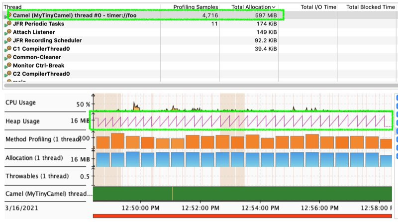
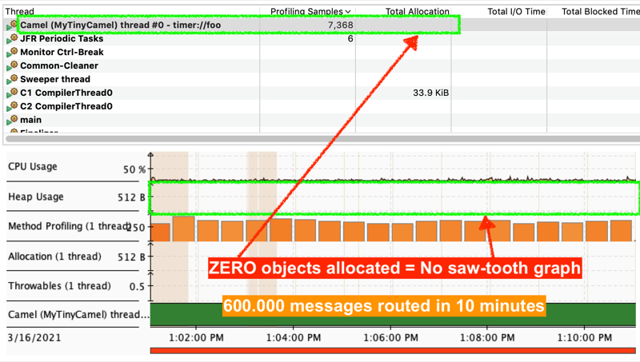

Apache Camel 3.9 has just been released.
This is a non-LTS release which means we will not provide patch releases. The next planned LTS release is 3.11 scheduled for June 2021.
So what’s in this release
This release introduces a set of new features and noticeable improvements that we will cover in this blog post.
Reduced object allocations
We have optimized the core by dramatically reducing object allocations - in fact the routing engine will produce ZERO or little objects during routing.
If you have seen Java monitoring tools then they will show memory usage charts that has saw tooth’s where objects are allocated and later reclaimed by the JVM garabage collector.
The diagrams below illustrate the same example of using Camel 3.8 vs 3.9
{kind=link}

In Camel 3.8 597mb of objects is allocated by Camel in total (running 10 minute).
{kind=link}

And in Camel 3.9 that is ZERO
For more details read Claus blog post which explains how this was done.
Optimized core
We continue to optimize the Camel core. For this release we have continued to optimize the startup phase of Camel. Camel now prepare and wireup Camel routes at an earlier phase, which helps us in the near future, to be able to do build time optimizations (with GraalVM, Quarkus, etc.) of the Camel routes, which makes Camel startup even faster and quicker.
We also began optimizing for loading classes earlier. We identified that when Camel routes is executing the first message, then the JVM classloader may load some Camel classes that are needed for routing. For this release we optimize some of the most common classes being loaded, but we want to implement a more automated solution for Camel 3.10, ensuring new classes are also eager loaded in the future.
The Camel components that uses header filtering has been optimized to filtering that are faster and much reduced object allocations.
Optimized HTTP component
The camel-http component has been optimized to reduce object allocations, and be a little bit faster. We also introduce more options which can be used to turn off various functionality from the underlying HTTP client that are not needed (such as cookie management), which optimizes for better performance.
Multi language DSLs
In Camel 3.8 we started porting over Camel K’s support for DSLs in alternative languages. For this release we added support for:
- JavaScript
- Groovy
- Kotlin
This means you can implement Camel routes in different languages and run them together.
This little example shows using Java and XML routes together. You can drop a .ktn file in the myroutes directory and Camel will during startup compile the Kotlin route and add its routes to the running Camel.
Notice that this approach is based on the principe of runtime compiling small route DSL snippets.
Optional Property Placeholders
Camel’s elaborate property placeholder feature now supports optional placeholders, which is defined by a ? (question mark) as prefix for the key name, eg
{{?myBufferSize}}
And Camel understands when you use optional parameters when defining Camel endpoints, eg:
file:foo?bufferSize={{?myBufferSize}}
Then the bufferSize option will only be configured if a placeholder exists. Otherwise the option will not be set on the endpoint, which allows to use any default value instead.
Kafka
The camel-kafka component has been made more fault tolerant and is now better able to recover from various errors with connectivity to Kafka Brokers, or payload serialization errors, etc. You can for example configure what Camel should do based on the kind of caused Exception; whether to retry, or disconnect/reconnect, or something else. And for more control you can plugin your own custom strategy when the out of the box settings are not sufficient.
The camel-vertx-kafka now has support for using manual offset commits.
The camel-kafka has fixed some issues when using manual commit which would cause camel-kafka to automatic commit anyway (such as on shutdown).
The components are upgraded to Kafka 2.7.
Spring Boot
We have upgraded to latest Spring Boot 2.4.4 release.
New components
This release has a number of new components, data formats and languages:
camel-aws-secrets-manager- Manage AWS Secrets Manager servicescamel-google-storage- Store and retrieve objects from Google Cloud Storage Servicecamel-google-functions- Manage and invoke Google Cloud Functions
Upgrading
Make sure to read the upgrade guide if you are upgrading from a previous Camel version.
Release Notes
You can find more information about this release in the release notes, with a list of JIRA tickets resolved in the release.